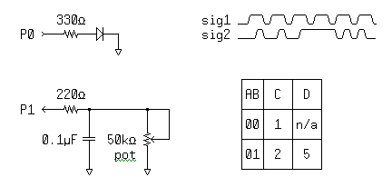

The engineering staff at Parallax has used many development environments over a period of more than 20 years. On many occasions we found ourselves thinking things like:
This experience has driven us to renew our determination to create simple, inexpensive tools for our products.
The Propeller Tool was designed with those ideas in mind to provide many useful functions while maintaining a simple, consistent development environment that encourages quick and easy development of Propeller chip firmware objects.
The Propeller Tool software consists of a single executable file, some on-line help files and Propeller library files, all stored in the same folder by the installer, typically: C:\Program Files\Parallax Inc\Propeller. The Propeller Tool’s executable file “Propeller.exe” can be copied and run from any folder on the computer; it does not rely on special system files other than what comes standard with the operating system.
Each library file (files with a “.spin” extension) is a self-contained object, available for use by your Propeller Projects, with both source code and documentation built-in. These are really just text files, either ANSI- or Unicode-encoded, that may be edited in any text editor that supports the encoding type; even Notepad in Windows® 2000 (and above) supports both ANSI and Unicode-encoded text files.
Did you notice we mentioned that an object’s documentation is “built-in” to the object file? We encourage writing the user documentation for an object right inside the object’s source file. This means fewer files to maintain and a higher likelihood that the documentation will stay in sync with the source code revision. To further enable this process, we’ve created:
The Parallax font is a True Type® font built right into the Propeller Tool executable. It was designed in the same style as the font built into the Propeller chip’s ROM. Using the special characters of the font, the object’s documentation can include helpful diagrams for engineering purposes such as these:

Graphics Built with the Parallax Font
After running the Propeller Tool at least once, this font becomes available for other programs on that computer as well so that you can see these special diagrams using other text editors, such as Notepad, or even within your email software, provided it supports Unicode-encoded text (a requirement of the special characters).
Every object you create for your project will also be stored in the same format as library files (with a “.spin” extension) but in the working directory of your choice. This is all designed to promote sharing and learning from existing objects, whether they were designed by us or by users of the Propeller products.
Propeller Help Version 1.2
Copyright © Parallax Inc., dba Parallax Semiconductor
6/17/2011